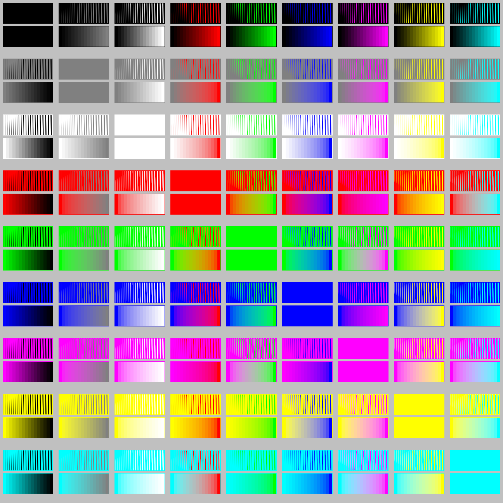

This page presents different alpha blending algorithms being implemented in the Marlin renderer's new Compositor.
This new compositor is developped in the unsafe-dev branch, see the pipe package.
This images are produced by the LineWidthColorGridTest class and stored in the PNG format (sRGB INT RGBA format).
Output files
Reference sRGB non-linear = Original Java2D approach
Gamma-corrected sRGB (linear) = gamma = 2.2

Gamma-corrected sRGB (linear) with luminance corrected based on gray (R+G+B) / 3

Gamma-corrected sRGB (linear) with luminance corrected based on true Y (ICC REC 709)